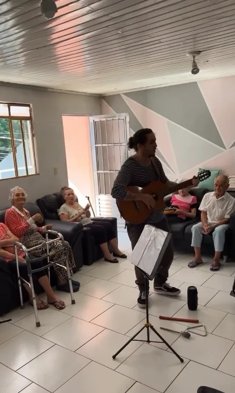

Vó NeteCasa de Repouso
Casa acolhedora em rua tranquila do Santa Cândida, com varanda, sala de TV e refeitório amplo. Uma rotina cheia de atividades, da fisioterapia à música.
Rua Joaquim Marques dos Santos, 206, Santa Cândida